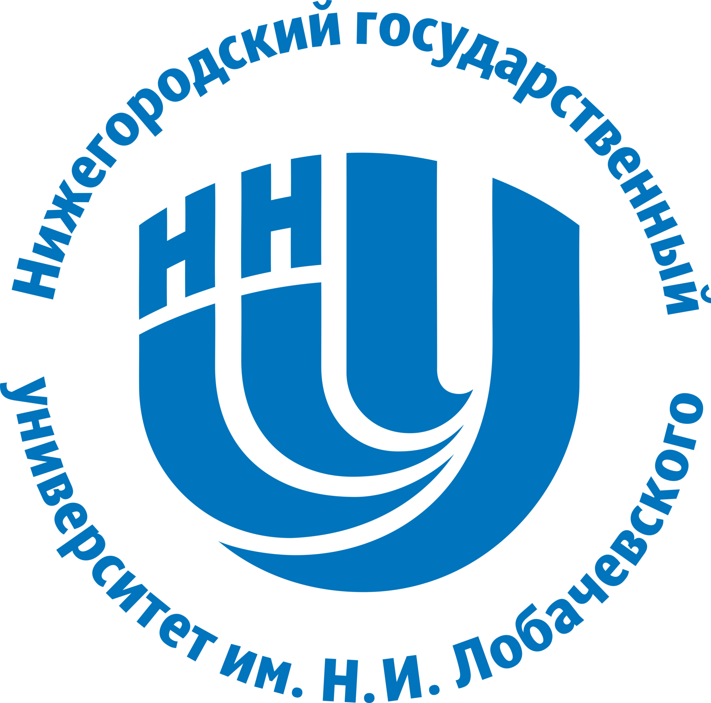

Lobachevsky State University of Nizhny Novgorod
Departament of informatics and automation of scientific research
The deoartament was created in order to improve the quality of specialists, intensify and coordinate The departqment was created in order to improve the quality of training of specialists, intensify and coordinate research work in the field of informatics and automation of scientific research based on the complex application of computer technology. Scientific work at the department is carried out to expand fundamental and applied research in the field of mathematical modeling, develop algorithms for solving large-sized intractable problems, create software that implements algorithms.
Get more info
